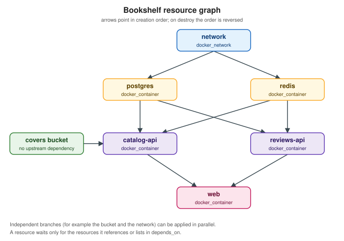

Dependency Graph and Plan
|
This content was generated with the assistance of AI and should be verified against the official documentation before being relied on in production. |
Terraform does not execute a configuration from top to bottom. It reads every resource, data, module, output and
provider block, works out which object needs which other object, and arranges them in a directed acyclic graph
(DAG). Everything else follows from that graph: the order of creation and destruction, which operations may run at the
same time, what a plan can predict and what stays (known after apply), and why a change to one object sometimes
rewrites a long chain of others.
This page describes the graph and the plan/apply cycle as documented for Terraform 1.17 and OpenTofu 1.13. First the
graph: implicit and explicit dependencies, how to inspect it with terraform graph, and how the walk is parallelised.
Then the planning modes (normal, destroy and refresh-only), the options that shape a plan (-replace, -target,
-refresh=false, -minimal-refresh), saved plans and the JSON representation of a plan, the options of apply, and the
pitfalls that appear when the graph does not match what you meant. It follows
Resources and Data Sources and
Meta-arguments: count, for_each and depends_on
in the reading path, builds on Lifecycle, Validation and
Checks, and leads into CLI Essentials and
State.
The examples use the Bookshelf scenario (catalog-api, reviews-api, web, PostgreSQL, Redis, a covers bucket, a
network). They run locally with the kreuzwerker/docker provider so that no cloud account is needed. Command output is
abbreviated and illustrative, not verbatim.
The resource graph
When Terraform plans or applies, it builds a graph whose nodes are resource instances, data sources, provider
configurations, modules, variables, locals and outputs, and whose edges mean "must be processed before". The internals
documentation describes the construction: resource nodes are added first, then edges are added from depends_on and
from every attribute reference found in an expression, objects that are in state but no longer in the configuration
(orphans) are added, a root node is added, and finally the graph is checked for cycles. If a cycle exists the run stops
with an error before anything is changed.
The graph is then walked. Terraform traverses it in parallel, depth-first, and a node starts as soon as all the nodes it depends on have finished. Independent branches therefore run concurrently, while a chain of dependent objects runs strictly in order. The same graph, with its edges reversed, drives destruction: an object is destroyed only after everything that depended on it is gone.
The following figure shows the graph of the Bookshelf configuration used throughout this page. The network comes first,
PostgreSQL and Redis need the network, the two APIs need the data stores, and web needs both APIs. The covers bucket
does not depend on anything, so Terraform can create it at the same time as the network.

Source: Terraform Docs — Resource Graph.
Implicit dependencies
An implicit dependency exists whenever an argument of one block contains a reference to another object. Writing
docker_network.bookshelf.name inside the container tells Terraform two things at once: it needs the value, and it must
therefore create the network first. This is the preferred form because the dependency is derived from the data that is
actually used, so it cannot drift away from the code.
terraform {
required_version = ">= 1.9"
required_providers {
docker = {
source = "kreuzwerker/docker"
version = "~> 4.6"
}
}
}
provider "docker" {}
resource "docker_network" "bookshelf" {
name = "bookshelf"
}
resource "docker_image" "postgres" {
name = "postgres:16"
keep_locally = true
}
resource "docker_image" "redis" {
name = "redis:7"
keep_locally = true
}
resource "docker_container" "postgres" {
name = "bookshelf-postgres"
image = docker_image.postgres.image_id # implicit: needs the image id
networks_advanced {
name = docker_network.bookshelf.name # implicit: needs the network name
}
env = ["POSTGRES_PASSWORD=${var.db_password}"]
}
resource "docker_container" "redis" {
name = "bookshelf-redis"
image = docker_image.redis.image_id
networks_advanced {
name = docker_network.bookshelf.name
}
}
variable "db_password" {
type = string
sensitive = true
}Source: Terraform Docs — Resource behavior, resource dependencies and Docker provider documentation.
Three details are worth remembering. A reference to an attribute of a resource that uses count or for_each creates a
dependency on all its instances. A reference to a module output creates a dependency on the resources the output
depends on. And a reference to a data source whose arguments are known at plan time lets Terraform read it early, during
planning, while a data source that depends on a not-yet-created resource is deferred to apply (this is the
(known after apply) you see on its attributes).
Explicit dependencies with depends_on
Sometimes one object relies on the behavior of another without reading any of its attributes. The classic Bookshelf
case is a container that connects to PostgreSQL at start-up: it needs the database container to exist, but it only
receives a hostname string. The depends_on meta-argument adds the missing edge. It accepts a list of references to
resources, data sources or modules in the same module.
resource "docker_container" "catalog_api" {
name = "bookshelf-catalog-api"
image = "bookshelf/catalog-api:1.0"
networks_advanced {
name = docker_network.bookshelf.name
}
env = [
"DB_HOST=bookshelf-postgres", # a literal string: no reference, no implicit edge
"REDIS_HOST=bookshelf-redis",
]
depends_on = [
docker_container.postgres,
docker_container.redis,
]
}The documentation calls depends_on a last resort, for three reasons. It forces Terraform to be conservative: it cannot
know which attributes of the upstream object matter, so it assumes any of them may change and shows more values as
(known after apply). That can produce larger plans and replace more resources than necessary. The effect is strongest
when the dependency is a whole module, because every resource and data source in the module then waits for the upstream
object. And it hides the reason for the edge, so a short comment explaining why should accompany every use. The
better fix is nearly always to pass the value through an expression, for example by building the host name from the
container’s name attribute so that the reference itself carries the dependency. The details of the argument are in
Meta-arguments.
Dependencies that lifecycle adds
Some lifecycle settings add or reverse edges. create_before_destroy reverses the destroy-time edge between a
replaced object and the objects that depend on it, so that the new object is created, dependents are re-pointed and only
then the old object is destroyed; the setting is applied to the dependencies as well, which is why it can spread.
replace_triggered_by adds an edge from the referenced resource and forces a replacement when that resource changes.
prevent_destroy does not change the graph, but it turns a plan that would destroy the object into an error. The
semantics are in Lifecycle, Validation and Checks; the
point here is that these settings change the plan, so they are visible in terraform plan and in terraform graph -type=plan.
Inspecting the graph with terraform graph
terraform graph writes the dependency graph in the DOT language, the format of Graphviz. By default it prints a
simplified graph of the dependency ordering of resource and data blocks. Choose a more detailed graph with
-type, whose valid values are plan, plan-refresh-only, plan-destroy and apply. The detailed graphs expose
internal nodes of the language runtime (provider configuration, root, close nodes), so treat their exact shape as an
implementation detail that can change between releases.
| Option | Meaning |
|---|---|
|
Select the graph type: |
|
Draw the graph of applying the given saved plan. It implies |
|
Highlight the edges that form a cycle with colour. Only useful together with a real |
|
Supply root module variables, as for |
Source: Terraform Docs — terraform graph.
If Graphviz is installed, pipe the output to dot to render it:
# simplified resource graph
terraform graph | dot -Tsvg > bookshelf.svg
# graph of a plan, and graph of the destroy walk
terraform graph -type=plan | dot -Tpng > plan.png
terraform graph -type=plan-destroy | dot -Tpng > destroy.png
# graph of a saved plan
terraform plan -out=tfplan
terraform graph -plan=tfplan | dot -Tpng > apply.pngThe output is plain text, so you can also read it without rendering. An abbreviated, illustrative extract for the Bookshelf configuration looks like this; the real output has more nodes and attributes.
digraph {
compound = "true"
newrank = "true"
subgraph "root" {
"[root] docker_container.catalog_api (expand)" -> "[root] docker_container.postgres (expand)"
"[root] docker_container.postgres (expand)" -> "[root] docker_network.bookshelf (expand)"
"[root] docker_container.postgres (expand)" -> "[root] docker_image.postgres (expand)"
}
}Source: Terraform Docs — terraform graph (output shape abbreviated and illustrative).
Reading the edges: an arrow goes from the dependent to the dependency, so catalog_api -> postgres means "the API
needs PostgreSQL". Use the graph to answer "why is this resource waiting?", to find an unexpected edge introduced by a
module-level depends_on, and to explain a cycle.
Parallelism
Terraform walks independent nodes concurrently. By default at most ten operations run at the same time. The
-parallelism=N option of plan, apply and destroy changes that limit. The internals documentation calls it an
advanced setting, and says that provider-level retry logic, not this option, is what handles API rate limits.
terraform apply -parallelism=4 # gentler on a rate-limited API
terraform apply -parallelism=30 # more concurrency for large, independent configurationsSource: Terraform Docs — terraform apply, options and Terraform Docs — Resource Graph, walking the graph.
Lowering it helps when a provider hits rate limits or when a remote system cannot create many objects at once. Raising it only helps if the graph actually has that much width: a long chain of dependent objects is serial no matter how high the limit. Parallelism is also why a failed apply can leave some objects created and others not, a point returned to in the pitfalls.
Planning modes
terraform plan compares three things: the configuration (what you want), the prior state (what Terraform last
recorded) and the real remote objects (what exists now, learned during the refresh step). A planning mode decides
what the plan tries to achieve. There are three, and they are mutually exclusive.
| Mode | Flag | What the plan proposes |
|---|---|---|
Normal |
none |
Create, update, replace or destroy objects so that the real infrastructure matches the configuration. |
Destroy |
|
Destroy every object that is tracked in state, leaving it empty. |
Refresh-only |
|
Change nothing remote. Update the state and the root module outputs to match what exists now, so that drift is recorded. |
Normal mode
Normal mode is what you get without a flag. Terraform refreshes the state from the real objects, diffs the result against the configuration, and proposes one action per resource instance, which the output marks with symbols:
| Symbol | Action |
|---|---|
|
create |
|
destroy |
|
update in place |
|
destroy and create again (replace) |
|
create first, then destroy (replace with |
|
read a data source during apply |
Source: Terraform Docs — terraform plan.
A typical abbreviated plan for the Bookshelf configuration after changing an image tag:
$ terraform plan
docker_container.catalog_api: Refreshing state... [id=...]
Terraform will perform the following actions:
# docker_container.catalog_api must be replaced
-/+ resource "docker_container" "catalog_api" {
~ image = "bookshelf/catalog-api:1.0" -> "bookshelf/catalog-api:1.1" # forces replacement
name = "bookshelf-catalog-api"
# (4 unchanged attributes hidden)
}
Plan: 1 to add, 0 to change, 1 to destroy.Source: Terraform Docs — terraform plan (output abbreviated and illustrative).
The comment # forces replacement is the clue to read: the provider declared that the attribute cannot be updated in
place. Replacement is a provider decision, not a core one, which is why the same change may be an in-place update for one
resource type and a replacement for another.
Destroy mode
terraform plan -destroy shows what terraform destroy would do, and terraform destroy is documented as a
convenience for terraform apply -destroy. The plan uses the destroy graph, in which every edge is reversed:
web is removed before the APIs, the APIs before the data stores, and the network last. Preview a destroy before running
it, and save the plan if a pipeline will execute it.
terraform plan -destroy -out=destroy.tfplan
terraform show destroy.tfplan
terraform apply destroy.tfplanprevent_destroy blocks a destroy plan for the protected resource with an error, and -replace cannot be combined with
-destroy. See the section on targeting for why restricting a destroy is risky.
Refresh-only mode
Real infrastructure changes outside Terraform: a colleague edits a setting in a console, an autoscaler changes a count,
a provider API starts returning a default it did not return before. Terraform calls the difference between the state and
reality drift. -refresh-only produces a plan whose only proposals are updates to state and to root module outputs;
no remote object is touched.
terraform plan -refresh-only
terraform apply -refresh-onlyterraform apply -refresh-only shows the detected differences and asks for approval before writing them to state. That
is the supported replacement for the older terraform refresh command, which the documentation marks as deprecated:
it wrote the changes without asking, so a mistaken credential or a wrong workspace could silently replace good state with
bad. Accepting a refresh-only plan does not change the configuration, so the next normal plan will still show a diff if
the recorded values no longer match what the code says. Decide for each difference whether to update the code to
match reality, or to run a normal apply to push reality back to the code.
Normal plans also detect drift during the refresh step and report it in a separate "Objects have changed outside of Terraform" section, showing only changes relevant to the proposed actions, so a refresh-only run is for when you want drift reviewed and recorded on its own.
Shaping a plan
Forcing a replacement with -replace
Sometimes an object is unhealthy but its configuration is unchanged: a container is wedged, a certificate was
corrupted, a bootstrap script ran with the wrong input. -replace=ADDRESS asks Terraform to plan the replacement of one
instance as if the provider had required it. It is available on plan and apply and can be repeated; it cannot be
combined with -destroy.
terraform plan -replace=docker_container.catalog_api
terraform apply -replace=docker_container.catalog_api
terraform apply -replace='docker_container.workers["eu"]' # an instance of a for_each resourceThe older way was terraform taint ADDRESS, which marks the object as tainted in state so that the next plan replaces
it. The command is deprecated in favour of -replace. The reasoning in the documentation is that a replacement requested
with -replace appears in a plan you can review, while a taint is written to state immediately and another user could
plan against the tainted object before you have reviewed the effect. Terraform itself still marks objects as tainted when
a create fails part-way (for example when a provisioner fails); terraform untaint removes the mark when you decide the
object is healthy.
Replacements cascade. Replacing postgres produces new values for the attributes that other resources read, so every
dependent that reads one of those attributes is also replaced or updated, and attributes that become unknown show as
(known after apply). Read the whole plan, not only the object you named.
Targeting with -target
-target=ADDRESS restricts the plan to the matching resource instances or modules and everything they depend on.
Dependents are not included. It can be repeated.
terraform plan -target=docker_container.redis
terraform apply -target=module.networkThe documentation says to use it "in exceptional circumstances only", and the tool reminds you every time it is used. The reasons it is discouraged follow from how state and the graph work.
-
The result is not a verified whole. Resources that were left out may need changes that interact with what you just applied, so the configuration is only partly reconciled and the state no longer describes a consistent system.
-
Dependents are ignored. If you change an output that another resource reads and target only the producer, the consumers are not updated until a later full plan.
-
It tempts people into routine use. A pipeline that targets "to be faster" accumulates unreviewed drift, and the full plan that eventually follows is larger and riskier than the targeted ones were.
-
Addresses are fragile. Instance addresses with
countindexes orfor_eachkeys change when the collection changes. OpenTofu’s documentation advises preferring whole-resource or module addresses.
Legitimate uses are recovery ones: an apply failed because a downstream object was misconfigured and you need to bring
up the upstream object so you can fix it, or a dependency problem needs a first partial apply. Follow every
targeted run with an untargeted terraform plan that should end with no changes.
OpenTofu adds -target-file and the inverse option -exclude (with -exclude-file), which plans everything except
the matching instances and anything depending on them. Targeting and excluding cannot be mixed in one command. The
OpenTofu documentation also reserves both for exceptional cases.
Skipping the refresh with -refresh=false
By default each plan first refreshes the state: it reads every managed object from its provider. For a large
configuration that is the slowest part of a plan and the largest consumer of API calls. -refresh=false skips it and
plans against the state exactly as recorded.
terraform plan -refresh=falseSource: Terraform Docs — terraform plan.
The cost is correctness: external changes are not noticed, so the plan can propose actions that are wrong or miss
changes that are needed. The option cannot be combined with -refresh-only. A saved plan created with it is also not
suitable for terraform show -json, according to the show documentation. Use it for fast feedback while editing, never
as the plan that is applied.
Refreshing only what changes with -minimal-refresh
Terraform 1.17 adds a middle path. The 1.17 changelog describes -minimal-refresh as a planning option that "will only
refresh resources that have proposed changes", and the plan reference adds that it cannot be used with
-refresh-only or with -refresh=false, and that a change in a resource schema version still triggers a refresh.
terraform plan -minimal-refresh -out=tfplanUnlike -refresh=false, objects that will change are still read from the provider, so the plan acts on current values
for them. Objects without a proposed change are not refreshed, which means drift on those objects goes unnoticed. The
exact criteria are decided by Terraform, so test it on your configuration before relying on it in a pipeline. The
OpenTofu 1.13 plan documentation lists -refresh=false but not -minimal-refresh, so do not assume the option exists
there.
Saved plans
A plan shown on screen and the plan applied a minute later are two separate computations: between them someone may merge a change or an API may return something different. A saved plan removes the gap.
terraform plan -out=tfplan # compute and save
terraform show tfplan # human-readable review
terraform apply tfplan # carry out exactly this plan, no promptThe behavior, as documented:
-
The file is in an opaque format, readable only by Terraform. Do not give it a suffix Terraform treats as configuration, such as
.tf. -
terraform apply tfplanruns the stored operations without prompting. Passing the file counts as approval, so-auto-approveis ignored, even for destructive operations. -
You cannot give planning modes or planning options (
-destroy,-refresh-only,-replace,-target,-var,-var-file) together with a saved plan, because those decisions are already stored in it. -
Apply options such as
-lock,-lock-timeout,-parallelismand-jsonstill work. -
Terraform refuses a plan that is stale, meaning the state changed after the plan was made. The remedy is to plan again.
-
The plan can contain sensitive values in cleartext, so store and transfer it like a secret. OpenTofu can encrypt plan files when state and plan encryption is configured.
-
Plan and apply must use the same Terraform version, provider versions and initialised working directory, which is why pipelines hand the plan from the plan job to the apply job together with the lock file.
Reading a plan as JSON
terraform show -json tfplan converts a saved plan into a documented JSON structure. It is how policy checks, cost
estimators and pull-request comment bots read a plan without parsing the human output.
terraform show -json tfplan > plan.json
# resources that would be destroyed or replaced
jq -r '.resource_changes[]
| select(.change.actions | index("delete"))
| .address' plan.json
# whether automation should consider applying this plan
jq '.applyable, .complete, .errored' plan.jsonThe main top-level properties of the plan representation are:
| Property | Content |
|---|---|
|
Version of the output schema. |
|
Input variable values used for the plan. |
|
The planned outcome, with unknown values omitted. |
|
One entry per resource instance, with |
|
Differences between the latest refreshed state and the prior saved state. |
|
Planned changes to root module outputs. |
|
The state the plan was computed against. |
|
The parsed configuration, including unevaluated expressions. |
|
Sources of values that contributed to the planned changes; can filter drift to what matters. |
|
Status of checkable objects such as conditions and |
|
Whether automation should consider applying the plan. The documentation calls it the primary check. |
|
Whether applying should bring reality in line with the configuration. When false, another plan and apply round is likely needed. |
|
Whether planning failed. An errored plan cannot be applied. |
change.actions is an array: ["no-op"], ["create"], ["read"], ["update"], ["delete"], and the two replace
forms ["delete", "create"] and ["create", "delete"]. A consumer that wants every case where something disappears
should test for the presence of the string delete, not for equality with a single value. Minor increments of format_version
are backward compatible additions, so consumers should ignore unknown properties and refuse an unsupported major
version.
terraform show -json prints sensitive values from state in cleartext, and a plan file can carry them too, so do not
post unredacted JSON in a pull request comment.
Apply options
terraform apply has two jobs. Without a plan file it plans first, shows the plan and asks for approval; with a plan file
it only executes. The options that matter day to day:
| Option | Meaning |
|---|---|
|
Skip the interactive approval. Ignored when a saved plan is given. It also approves destructive changes, so use it only where the plan is reviewed another way. |
|
Never prompt, including for unset variables. Because approval is a prompt, apply then fails unless |
|
Set root module variables. Not allowed together with a saved plan. |
|
Do not hold the state lock. The documentation calls this dangerous if others may run commands against the same workspace. |
|
Retry to acquire the state lock for the given time, for example |
|
Limit concurrent operations. The default is 10. |
|
Machine-readable, line-by-line JSON output. It implies |
|
Replace an instance; a planning option, so not with a saved plan. |
|
Planning modes; not with a saved plan. |
|
Presentation only. |
Source: Terraform Docs — terraform apply.
terraform plan accepts the same locking, input, variable, parallelism and JSON options, plus -detailed-exitcode
(exit status 0 for no changes, 1 for an error and 2 when changes are present), which is the usual way for a CI job to
branch on whether there is anything to apply.
A non-interactive pipeline therefore normally looks like this:
export TF_IN_AUTOMATION=1
export TF_VAR_db_password="$DB_PASSWORD_FROM_SECRET_STORE" # placeholder; never commit values
terraform init -input=false
terraform plan -input=false -lock-timeout=5m -detailed-exitcode -out=tfplan
rc=$? # 0 = no changes, 2 = changes present, 1 = error
if [ "$rc" -eq 2 ]; then
terraform apply -input=false -lock-timeout=5m -json tfplan
fiWhat happens during an apply
The sequence below follows one terraform apply of an unsaved plan: the state is locked, refreshed, planned, approved,
executed node by node, and written back. State is updated while the apply progresses, not just at the end, which is
what makes a partial apply recoverable.
Source: Terraform Docs — terraform apply and Terraform Docs — Resource Graph (sequence simplified).
When an error occurs, the documentation says Terraform logs it, records in state the changes that did complete, releases the lock and exits. It does not roll back. After fixing the cause you run apply again, and Terraform plans only what is still missing.
Plan and apply with OpenTofu
OpenTofu 1.13 offers the same planning modes, -replace, -refresh=false, -out, -lock, -lock-timeout,
-parallelism, -json and -detailed-exitcode, with tofu in place of terraform. Differences found in the
documentation:
-
-exclude,-exclude-fileand-target-filefor selecting objects (not documented in Terraform). -
-conciseto suppress progress messages,-json-into=FILEto write the JSON stream to a file while keeping the normal output, and-show-sensitiveto stop redacting sensitive values in the UI output. -
-consolidate-warningsand-consolidate-errors, and-deprecationto select which module deprecation warnings are shown. -
Plan files can be encrypted when plan encryption is configured.
-
No
-minimal-refreshis documented.
Source: OpenTofu Docs — tofu plan and OpenTofu Docs — tofu apply.
Pitfalls
Dependency cycles
A cycle appears when A needs B and B needs A, directly or through a chain. Terraform stops with a "Cycle" error that lists the objects involved. Typical causes:
-
Two security groups that reference each other in inline rules. Use separate rule resources so that neither group needs the other to exist first.
-
A resource that reads an output of a module that itself reads that resource.
-
depends_onpointing at a resource that already depends on the one declaring it. -
A
providerconfiguration that depends on a resource it is also needed to create.
Draw the offending part with terraform graph -type=plan -draw-cycles, then break the loop by splitting a resource in
two, removing an unnecessary reference, or turning one direction into data that is passed in.
Cascading replacements
A change to a value that forces replacement does not stop at the first resource. Everything that reads an attribute of
the replaced object sees a new value (often unknown) and may be replaced as well. A new database container id can
replace every container that uses it, a new network can replace every container attached to it. Review -/+ entries
down the whole plan, look at which attribute shows # forces replacement, and consider create_before_destroy,
ignore_changes for an attribute that is changed on purpose outside Terraform, or a design that decouples the
objects (for example resolving a DNS name instead of reading an id).
Hidden dependencies
When a resource needs another one but receives only a literal string, Terraform sees no edge and may create them in
parallel or destroy them in the wrong order. Symptoms are intermittent failures that disappear on a second apply. Prefer
a reference; if that is impossible, add a commented depends_on.
Perpetual diffs
A plan that proposes the same change after every apply means the value read back from the provider never equals the value
in the configuration. Common sources: a provider normalises a value (case, trailing dot, ordering of a set), a field is
changed by another system (tags added by a cloud policy), a computed default competes with an explicit argument, or an
unknown value is used in a way that makes the plan non-deterministic. Compare terraform plan with terraform show -json
for the before/after, then fix the configuration to the normalised form, add ignore_changes for the field owned by
someone else, or report the provider bug. A -refresh-only apply followed by a normal plan separates drift from
normalisation.
Unknown values in iteration
count and for_each need to know the number of instances or the keys at plan time. If the collection is derived from
an attribute that is only known after apply, Terraform stops with an error about an argument that "cannot be determined
until apply". Derive the keys from values that are known at plan time (static maps or variables), or apply in two steps
with -target as a one-time recovery.
Partial applies and failed state updates
An apply can fail after some objects were created, because of an API error, a quota, a timeout, or the interruption of
the process. State holds what completed, the failed object may be marked tainted, and the next plan proposes the rest, plus
a replacement for the tainted object. If the process was killed hard or the state write itself failed, the backend may
still hold the lock and an object may exist remotely without being recorded: use terraform force-unlock only when you
are certain nobody else is running, then reconcile with an import. Using a remote backend with locking, and not running
two applies against the same state, are the main safeguards (see State).
What changed recently
-
Terraform 1.17:
-minimal-refreshwas added toterraform plan, refreshing only resources with proposed changes. -
Terraform 0.15.2 and later:
-replaceis available, andterraform taintis deprecated in its favour. -
Terraform 0.15.4 and later:
-refresh-onlyis available, andterraform refreshis deprecated in its favour. -
Current releases: the
-invokeoption ofplanandapplyruns a single provider action (-invoke=action.TYPE.LABEL) and ignores the rest of the configuration. -
OpenTofu:
-excludeand-target-file/-exclude-fileextend targeting; plan files can be encrypted.
Source: Terraform v1.17 CHANGELOG and Terraform Docs — terraform plan.
Terraform and OpenTofu differences
| Topic | Terraform 1.17 | OpenTofu 1.13 |
|---|---|---|
Selecting objects |
|
|
Minimal refresh |
|
not documented |
Saved plan protection |
plan contains sensitive values in cleartext; protect the file |
optional plan encryption |
JSON output of a run |
|
|
Command name |
|
|
Source: OpenTofu Docs — tofu plan.
Where the books are outdated or wrong
Books on Terraform often explain terraform taint as the way to force a replacement, and terraform refresh as the way to
synchronise state; both commands are deprecated, and the documentation points to -replace and -refresh-only. Older
explanations of targeting present -target as a normal tool for speeding up applies, whereas the current documentation
restricts it to exceptional circumstances. Descriptions of a plan JSON that only mention planned_values and
resource_changes miss the applyable, complete and errored properties that automation should check, and
-minimal-refresh and -exclude post-date most printed material.